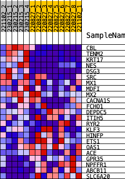

| | | Dataset | norm_counts_forGSEA.Phenotype.cls#2_versus_1.Phenotype.cls#2_versus_1_repos |
| Phenotype | Phenotype.cls#2_versus_1_repos |
| Upregulated in class | 1 |
| GeneSet | KRAS.KIDNEY_UP.V1_DN |
| Enrichment Score (ES) | -0.28129283 |
| Normalized Enrichment Score (NES) | -0.88141465 |
| Nominal p-value | 0.6293706 |
| FDR q-value | 1.0 |
| FWER p-Value | 0.998 |
Table: GSEA Results Summary
 Fig 1: Enrichment plot: KRAS.KIDNEY_UP.V1_DN
Fig 1: Enrichment plot: KRAS.KIDNEY_UP.V1_DN
Profile of the Running ES Score & Positions of GeneSet Members on the Rank Ordered List
| SYMBOL | RANK IN GENE LIST | RANK METRIC SCORE | RUNNING ES | CORE ENRICHMENT | | 1 | CBL | 338 | 1.240 | 0.0318 | No |
| 2 | TENM2 | 514 | 1.099 | 0.0851 | No |
| 3 | KRT17 | 1076 | 0.871 | 0.0424 | No |
| 4 | NES | 1260 | 0.820 | 0.0716 | No |
| 5 | DSG3 | 1660 | 0.719 | 0.0493 | No |
| 6 | SRC | 1935 | 0.655 | 0.0469 | No |
| 7 | MX1 | 2816 | 0.403 | -0.0976 | No |
| 8 | MDFI | 2931 | 0.363 | -0.0913 | No |
| 9 | MX2 | 3040 | 0.321 | -0.0872 | No |
| 10 | CACNA1S | 3170 | 0.272 | -0.0912 | No |
| 11 | FCHO1 | 4117 | -0.187 | -0.2663 | Yes |
| 12 | DEPDC5 | 4136 | -0.198 | -0.2540 | Yes |
| 13 | ITIH5 | 4139 | -0.200 | -0.2383 | Yes |
| 14 | RYR2 | 4156 | -0.208 | -0.2248 | Yes |
| 15 | KLF3 | 4205 | -0.243 | -0.2149 | Yes |
| 16 | HINFP | 4313 | -0.314 | -0.2112 | Yes |
| 17 | ETS1 | 4376 | -0.371 | -0.1938 | Yes |
| 18 | OAS1 | 4442 | -0.423 | -0.1728 | Yes |
| 19 | ACE | 4511 | -0.481 | -0.1477 | Yes |
| 20 | GPR35 | 4540 | -0.509 | -0.1124 | Yes |
| 21 | NPFFR1 | 4735 | -0.684 | -0.0963 | Yes |
| 22 | ABCB11 | 4857 | -0.814 | -0.0551 | Yes |
| 23 | SLC6A20 | 4963 | -1.038 | 0.0072 | Yes |
Table: GSEA details [plain text format]

Fig 2: KRAS.KIDNEY_UP.V1_DN
Blue-Pink O' Gram in the Space of the Analyzed GeneSet
Fig 3: KRAS.KIDNEY_UP.V1_DN: Random ES distribution
Gene set null distribution of ES for KRAS.KIDNEY_UP.V1_DN